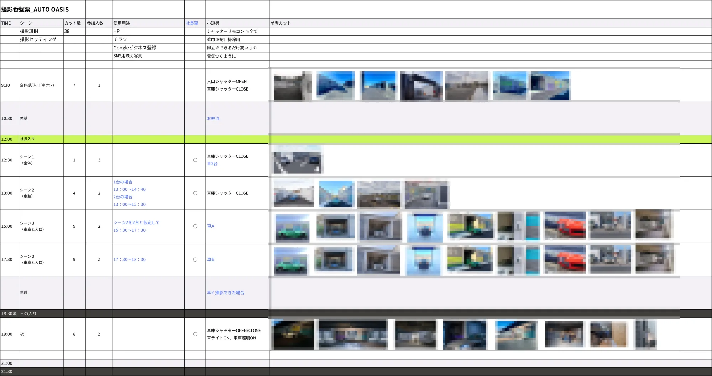
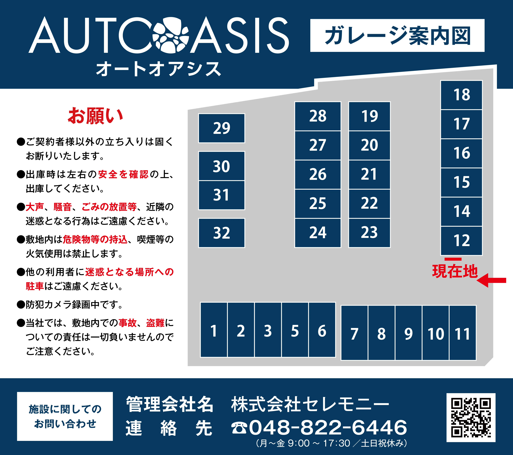

高品質なガレージの価値を、素材づくりから伝える
- ターゲット
- 高級車・バイクを所有し、セキュリティと保管環境を重視するオーナー。
- 課題
- 新規オープンにあたり認知と入会申込みを獲得したい。ただし撮影素材が一切ない状態からのスタートで、サイトの説得力を支える写真づくりが前提条件だった。
- 目的
- 「プレミアムガレージ」の品質・セキュリティが伝わるサイトを公開し、問い合わせ・入会につなげる。
- 進め方・課題解決
- 撮影企画から担当。香盤票（撮影スケジュール・カット表）を作成し、HP・チラシ・Googleビジネス・SNSと用途から逆算した38カットを、日中〜夜間まで1日で撮り切る計画に落とし込んだ。サイトは「料金プラン → アクセス → 特長 → 利用アイデア → 設備 → Q&A」と、検討時の疑問を上から順に解消する情報設計。ネイビー基調のトーンで、高級な落ち着きと安心を表現した。
- 担当範囲
- ディレクション・撮影企画（香盤票作成）・デザイン・看板デザイン
撮影香盤票 — 用途から逆算したカット設計
シーン・カット数・小道具・時間帯（日没後の夜間カット含む）まで事前に設計し、限られた撮影時間で必要素材を確実に揃えました。

看板デザイン
現地で利用者が最初に目にするのは、サイトではなくこの看板になる。載せる情報をマップ・注意事項・管理者情報・QRコードの4つに絞り、離れた場所からでも読める構成と、サイトと揃えたブランドトーンで設計した。
